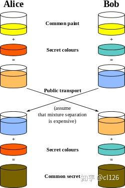

CISSP（六）
引言
获得知识的同时，也获得了痛苦。
密码学
Jargon:
1 | |
密码系统
混淆和扩散是大多数密码系统运行的两个基本原理。
当明文与密钥之间的关系非常复杂，致使攻击者无法只靠继续修改明文和分析得出的密文来确定密钥时，就是混淆发挥了作用。
当明文的一处变化导致多个变化在整个密文中传播时，就是扩散发挥了作用。
密码系统实现4个基本目标：保密性、完整性、身份认证和不可否认性。
CIA就是机密、完整、可用。把可用性去掉，加上身份认证和不可否认，就是密码系统的四个目标。
AES密码系统可以实现保密性、身份认证、完整性, 但是不能实现不可否认性。
AES加密，明文相同，每次加密后的密文都不同吗
是的
AES（Advanced Encryption Standard）是一种对称加密算法，对于相同的明文，AES每次加密后的密文是不同的。这是因为AES使用随机的初始化向量（Initialization Vector，简称IV）来加密数据，以增加加密的安全性。
在AES加密中，每次加密操作都会生成一个新的随机IV，并将IV与明文一起进行加密。这意味着即使相同的明文被多次加密，每次加密都会产生不同的密文，即使明文相同，密文也是不同的。这种随机性使得攻击者难以通过观察密文的模式来破解加密，增强了加密的安全性。
同时，接收方在解密时会使用与加密时相同的IV来还原原始的明文。因此，在AES加密中，除了密钥外，IV的随机性也对确保安全性至关重要。因此，在使用AES进行加密时，必须正确生成和管理IV，以确保每次加密产生的密文都是不同的。这通常是由加密库或加密协议自动处理的，用户通常无需手动管理IV。
AES密码系统为什么不能实现不可否认性呢？
AES（Advanced Encryption Standard）是一种对称加密算法，它的主要目标是提供机密性和数据保护。不可否认性（Non-repudiation）是一种不同的安全属性，通常与数字签名和非对称加密相关。
不可否认性是指在一方发送消息后，该方不能否认曾经发送过该消息的能力。这意味着消息的发送者不能否认自己发送了消息，因为消息具有数字签名或其他可验证的信息，可以证明发送者身份。
AES是一种对称加密算法，使用相同的密钥对数据进行加密和解密。因此，AES不提供数字签名或非对称加密所需的非可否认性特性。不可否认性通常需要在数字签名或非对称加密方案中实现，这些方案使用公钥和私钥对数据进行加密和验证。
要实现不可否认性，通常会使用非对称加密算法（如RSA、DSA等）来生成数字签名，确保发送者不能否认消息的来源和内容。非对称加密使用一对密钥，私钥用于签名，公钥用于验证。只有持有私钥的发送者才能生成有效的数字签名，而任何人都可以使用公钥验证数字签名的有效性。
综上所述，AES是一种对称加密算法，主要用于提供机密性，而不是不可否认性。要实现不可否认性，需要使用数字签名或其他非对称加密技术，以确保消息的来源和内容不可否认。
零知识证明（Zero-knowledge proof）
是密码学中的一种重要概念，用于验证某个主张的正确性，而同时不泄露关于主张本身的任何信息。在零知识证明中，证明者（通常是一个计算机系统或者实体）试图向验证者证明某个陈述是真实的，但是不透露任何有关如何证明这个陈述的信息。
这种技术在实际应用中非常有用，特别是在保护隐私和安全性方面。举例来说，假设一个人知道一个密码或者私钥，而他不想直接将密码或者私钥暴露给另外一个人，那么他可以使用零知识证明来证明自己知道这个密码或私钥，而无需实际透露密码或私钥的内容。
在密码学、区块链技术和其他安全性领域，零知识证明得到了广泛的应用，帮助实现隐私保护和安全验证。
这可以通过复杂的数学运算实现，如离散对数和图论。
Diffie-Hellman 算法
Diffie-Hellman 算法发明于1976年。读作迪菲-黑尔门
允许两方通过不安全信道交换对称加密密钥。
Diffie-Hellman 算法又叫做Diffie-Hellman密钥协商算法（key agreement）
这个算法的原理根据数学中的有限域的离散对数问题设计的。

不说数学公式了，因为我根本不会。
就看这上面这张图。
（金黄 + 橘红） + 蓝色 = 橄榄绿色
（金黄 + 蓝色） + 橘红 = 橄榄绿色
在攻击者眼里：
（金黄 + 某种颜色A）+ 某种颜色B = 无法计算出的密文
（金黄 + 某种颜色B）+ 某种颜色A = 无法计算出的密文
因为橘红和蓝色从来没有公开过，没有交换过。所以攻击者就不知道。
Diffie-Hellman密钥协商算法（key agreement）
因为Alice和Bob根本就没有交换过密钥。他们只是交换了其中一个结果。
对称密码系统
对称密码系统：同一个密钥进行加解密。
非对称密码系统：使用公钥加密，私钥解密。
CAST 算法
CAST（Carlisle Adams and Stafford Tavares）是一组对称加密算法，最初由加拿大的密码学家Carlisle Adams和Stafford Tavares在1996年开发的。CAST算法属于分组密码家族，通常用于数据加密和保护通信隐私。
CAST算法有几种变种，包括CAST-128、CAST-256等。其中，CAST-128是较早的版本，使用40位至128位的密钥长度，而CAST-256是较新的版本，使用128位至256位的密钥长度。这些算法在设计上注重了安全性和性能的平衡，并且曾经在一些应用中得到广泛使用。
然而，需要注意的是，CAST算法在现代密码学中已经不再被视为最安全的选择，因为它们的安全性没有像AES（Advanced Encryption Standard）等更新的对称加密算法那样经过广泛的审查和验证。因此，在选择加密算法时，通常会更倾向于使用更现代、更安全的替代方案。
AES加密，密钥的长度？
AES（Advanced Encryption Standard）是一种对称加密算法，其密钥长度可以是128比特、192比特或256比特，分别对应AES-128、AES-192和AES-256。这些密钥长度决定了加密的安全性和强度。
- AES-128使用128比特（16字节）的密钥。
- AES-192使用192比特（24字节）的密钥。
- AES-256使用256比特（32字节）的密钥。
一般来说，密钥长度越长，加密的强度越高，但也会导致加密和解密的计算成本增加。选择密钥长度应该根据具体的安全需求来确定，通常情况下，128比特的密钥已经足够用于大多数应用。如果需要更高的安全级别，可以考虑使用192比特或256比特的密钥。密钥的选择应该根据具体的安全需求和性能要求来权衡。
Rijndael算法
Rijndael是一种对称密钥加密算法，它是Advanced Encryption Standard（AES）的前身。AES是美国国家标准与技术研究所（NIST）于2001年选定的加密标准，而Rijndael是AES标准的原始提名者之一。
Rijndael算法是由比利时密码学家Vincent Rijmen和Joan Daemen于1998年开发的。它是一种分组密码算法，支持多种密钥长度，包括128比特、192比特和256比特。Rijndael以其高度安全的特性和高性能而闻名，因此被NIST选中作为AES的候选算法。
最终，经过广泛的审查和竞争，Rijndael被选定为AES标准，成为了用于各种加密应用的国际标准加密算法。AES在全球范围内得到广泛应用，包括数据加密、网络通信、电子商务和计算机安全等领域。
总之，Rijndael算法是AES标准的前身，是一种强大且灵活的对称密钥加密算法，已被广泛接受并应用于众多安全领域。
Blowfish是什么算法
Blowfish（布洛克菲什）是一种对称密钥加密算法，由Bruce Schneier在1993年设计。它是一种快速、高效且安全的加密算法，广泛用于数据加密和密码学应用中。
Blowfish是一种分组密码，它将明文数据划分为固定长度的块（通常是64位），然后使用密钥进行加密和解密。算法的关键部分包括了轮函数（Feistel函数）和密钥扩展过程。
主要特点：
- 快速和高效：Blowfish在大多数平台上都能够快速加密和解密数据，使其适用于许多应用场景。
- 可变密钥长度：Blowfish支持密钥长度从32位到448位，使其非常灵活。
- 安全性：尽管Blowfish在过去是一个相对安全的加密算法，但随着时间的推移和密码分析技术的发展，它已经不再被认为是最安全的选择。现在通常更推荐使用AES（高级加密标准）作为更强大和安全的加密算法。
由于Blowfish的一个关键特性是可变长度的密钥，它曾经在一些领域被广泛使用，特别是在加密应用中。然而，随着更强大的加密算法的出现，Blowfish的使用已经逐渐减少，特别是在对高度敏感的数据和安全性要求较高的场景。
Twofish是什么算法
Twofish 是一种对称加密算法，由布鲁斯·斯奈尔（Bruce Schneier）等人于1998年开发。它是一种块密码算法，通常用于数据加密和保护通信的隐私。Twofish 是一种强大的加密算法，被广泛认为是安全的，并且在一些安全应用中得到了广泛使用。
以下是 Twofish 算法的一些关键特点和概述：
块密码算法：Twofish 将明文数据分成块，并使用密钥来对每个块进行加密和解密。
密钥长度：Twofish 支持密钥长度为128比特、192比特和256比特。这些不同的密钥长度可以提供不同级别的安全性。
高度安全：Twofish 被设计成安全性很高的加密算法，并且在多轮混合和置换的操作下提供强大的密码学安全性。
快速性能：尽管 Twofish 在安全性上表现良好，但它仍然具有相对较高的性能，适合在各种计算设备上使用。
对于硬件和软件都适用：Twofish 适用于硬件和软件实现，这使得它在不同的应用中都有广泛的用途。
Twofish 是一个经过严格设计和分析的加密算法，被广泛认为是安全的。然而，需要注意，随着时间的推移，密码学和计算能力的发展，加密算法的安全性也可能会受到挑战，因此密钥管理和加密协议的实现仍然是确保数据安全的重要方面。在选择和使用加密算法时，应根据特定应用的需求和最新的安全建议来做出明智的选择。
Serpent是什么算法
Serpent是一种对称密钥加密算法，是比利时密码学家Vincent Rijmen、Ross Anderson、Eli Biham在1998年开发的。与AES（Advanced Encryption Standard）一样，Serpent曾经是作为AES的候选算法之一。
Serpent算法被设计成安全性高且强大的加密算法，支持128比特、192比特和256比特的密钥长度。它是一种分组密码算法，用于加密数据块，通常以固定大小的块（例如128比特）作为输入，并产生相同大小的输出块。
尽管Serpent在加密强度和安全性上表现出色，但最终在AES竞赛中被Rijndael算法选为AES标准。然而，Serpent仍然被认为是一种非常安全和强大的加密算法，适用于各种安全应用，尤其是当对抗高级攻击时。它仍然被广泛用于密码学研究和特定领域的安全需求。
总的来说，Serpent是一种受欢迎的对称密钥加密算法，具有强大的加密强度，被用于数据加密和保护通信的隐私。虽然它没有成为AES标准，但仍然在密码学社区中有一定的重要性。
MARS是什么算法
MARS（Matrix-based Algorithm for Real-time Security）是一种对称密钥加密算法，由IBM在1999年开发。它是一种分组密码算法，被设计成安全性高且能够在实时应用中高效运行的加密算法。
MARS的设计目标是提供高级别的安全性，同时在计算机硬件上实现高性能。它支持多种密钥长度，包括128比特、192比特和256比特，具有很强的安全性。与一些其他加密算法相比，MARS在硬件上的性能非常出色，因此适用于需要快速数据加密和解密的应用。
然而，需要注意的是，尽管MARS在其设计和实现上表现出色，但它并没有像AES（Advanced Encryption Standard）那样得到广泛接受并成为国际标准。AES在密码学社区中成为了最常用的对称加密算法之一，而MARS在实际应用中的使用相对较少。
总的来说，MARS是一种强大的对称密钥加密算法，具有高级别的安全性和良好的性能，但并没有像一些其他算法那样成为广泛使用的国际标准。在选择加密算法时，通常会优先考虑得到广泛接受和验证的算法，如AES。
RC6是什么算法
RC6（Rivest Cipher 6）是一种对称密钥加密算法，由美国密码学家Ron Rivest于1998年开发。RC6是一种分组密码算法，通常用于数据加密和保护通信隐私。
RC6的设计目标是提供高级别的安全性，并且在硬件和软件上都能实现高效的性能。它支持多种密钥长度，包括128比特、192比特和256比特。RC6的设计基于分组密码结构，使用了类似于轮函数（round function）的操作，经过多轮的迭代来加密数据块。
尽管RC6在其设计和实现上表现出色，但它并没有像AES（Advanced Encryption Standard）那样被广泛接受并成为国际标准。AES在密码学社区中成为了最常用的对称加密算法之一，而RC6在实际应用中的使用相对较少。
代码和密码的区别
代码作用于单词和短语，密码作用于字符、位和块。
代码不一定用来保密；密码是一定要用来保密的。
密码的运行模式
是指密码算法为实现抵御攻击的充分复杂度而采用的转换数据的不同方式。密码的主要运行模式有电子密码本(ECB)模式、密码块链接(CBC)模式、密码反馈(CFB)模式、输出反馈(OFB)模式、计数器(CTR)模式、Galois／计数器模式(GCM)和带密码块链接消息验证码的计数器(CCM)模式。
CBC 使错误的不良特性在块之间传播
最安全的对称算法 AES-256
什么是Vigenere密码？
维吉尼亚密码（Vigenère Cipher）是一种古典的多表替代密码，用于加密文本。它是由16世纪法国密码学家布拉塞·维吉尼亚（Blaise de Vigenère）发明的，因此得名。
维吉尼亚密码是一种多表替代密码，与凯撒密码（Caesar Cipher）类似，但更复杂。在维吉尼亚密码中，明文中的每个字母都根据一个密钥字母进行加密，而不是像凯撒密码那样使用一个固定的偏移值。
加密过程如下：
- 选择一个密钥词（通常是一个单词或短语），例如 “KEY”。
- 重复密钥词，直到它至少与明文一样长。例如，如果明文是 “HELLO”，那么密钥词将被重复为 “KEYKE”。
- 将明文中的每个字母与密钥中对应位置的字母进行组合，然后使用某种加密规则来生成密文。一种常见的规则是使用字母表的循环移位操作，就像凯撒密码一样，但不同位置使用不同的偏移量，这些偏移量由密钥中的字母确定。
解密过程与加密过程类似，只是需要使用相同的密钥词来逆向操作，从密文中恢复原始的明文。
尽管维吉尼亚密码在历史上曾被用于保密通信，但它相对较易被破解，因为如果密钥词不够长，那么攻击者可以使用统计分析等方法来推断出密钥。现代密码学中，维吉尼亚密码已经被更强大的加密算法所取代，但它仍然具有历史和教育上的重要性。
块密码和流密码的区别
块密码（Block Cipher）和流密码（Stream Cipher）是两种对称加密算法，它们在加密和解密数据时有一些重要的区别。
- 块密码（Block Cipher）：
- 工作方式：块密码将明文数据分成固定长度的块，通常是64位或128位，然后对每个块进行独立的加密和解密操作。
- 加密特点：块密码的加密过程是逐个块进行的，即每个块的加密都依赖于前一个块的加密结果。这样的加密过程是迭代的，并且需要明文数据长度是块长度的整数倍。
- 填充方式：如果明文数据长度不是块长度的整数倍，需要使用填充方式来填充最后一个块，使其达到块长度。
- 常见算法：DES（Data Encryption Standard）、AES（Advanced Encryption Standard）等都是块密码算法。
- 流密码（Stream Cipher）：
- 工作方式：流密码逐位（比特）地对明文数据进行加密，即将明文和密钥的每个比特进行混合，生成对应的密文比特。
- 加密特点：流密码的加密是流式进行的，不需要将数据划分为固定长度的块。它能够逐位加密任意长度的数据流，使其适用于实时通信和流式数据的加密。
- 同步性：流密码需要保持密钥流和明文数据流的同步，以确保正确的解密。这通常通过初始化向量（Initialization Vector, IV）来实现。
- 常见算法：RC4（Rivest Cipher 4）是一个著名的流密码算法。
凯撒密码是流密码的一个例子。单次密本也是一种流密码，因为算法在明文消息的每个字母上单独运行。
总结：
块密码适用于将数据划分成块并逐个进行加密的场景，但在处理非常长的数据流时效率可能较低。流密码适用于需要流式加密的场景，特别是对实时通信和数据流的加密。在实际应用中，选择加密算法要根据具体需求、安全性要求和性能等因素来综合考虑。
对称密码系统
Brian 管理着一个由20 个用户使用的对称密码系统，其中每个用户都可以与任何其他
用户进行私密通信。有一个用户丧失了对自己账户的控制， Brian 认为这个用户的密钥泄露了。
那么Brian 必须更换多少个密钥？ 19个
James 是其所在机构的对称密钥密码系统管理员。需要的时候，他会向用户发放密钥。
Mary 和Beth 最近找到了他，提出他们之间需要安全交换加密文件。那么， James 必须生成多少个密钥？ 1个
Jones 研究所有6 名员工，用一种对称密钥加密系统来保证通信的保密性。如果每名
员工都需要与其他所有员工进行私密通信，那么他们需要多少个密钥？ 15 个
每对想私下通信的用户都必须有一个单独的密钥。在一组6 个用户中，总共需要15 个秘密密钥。你可以用公式(n*(n-I)/2)算出这个值。在本例中， n=6, 因而得出(6*5)/2=15个密钥。
初始化向量
GCM
Tammy 正在为她将在单位使用的一个对称密码系统挑选一种运行模式。她希望自己
选出的模式既能为数据提供保密性保护，又能保证数据的真实性。以下哪种模式最能满足她
的要求？ GCM
[6/20] 练习题测试结果
正确率 6/20
[12/20] 《CISSP官方学习指南第八版》第6章练习题
正确率 12/20
- A,D
- A
- B
- D
当明文与密钥之间关系足够复杂，使攻击者无法只靠持续修改明文和分析得出的密文来确定密钥时，是什么发挥了作用？ （选出所有适用的答案。）
A. 混淆
B. 位移
C. 多态
D. 扩散
- A
正确答案是A,D
- B,C,D
- D
- B,C,D
- C
- C
- A
Dave 正在开发一个密钥托管系统，要求必须多人一起出现才能恢复一个密钥，但又不要求所有参与者全部到场。 Dave 使用的是哪种技术？
A. 分割知识
B. N之取M控制
C. 代价函数
D. 零知识证明
- D
正确答案是B
N之取M控制（也称为阈值加密）是一种多方参与的密钥管理技术，其中N代表总共的参与者数量，M代表所需的最小参与者数量。只有当至少M个参与者一起合作时，才能恢复密钥。这种方法提供了分布式密钥管理的方式，确保了密钥的安全性，同时允许在不需要所有参与者的情况下执行关键操作。这对于高度安全的环境或需要灵活性的场景非常有用。
选项A中的分割知识通常用于将一个秘密信息分成多个部分，需要多个人合作才能恢复原始信息，但它通常不涉及密钥管理。
选项C中的代价函数通常用于密码学协议中，但它不是用于多人合作密钥管理的特定技术。
选项D中的零知识证明是一种验证某人拥有某些信息或知识，而不需要揭示这些信息的技术，与多人密钥管理不直接相关。
- A
Tammy 正在为她将在单位使用的一个对称密码系统挑选一种运行模式。她希望自己
选出的模式既能为数据提供保密性保护，又能保证数据的真实性。以下哪种模式最能满足她
的要求？
A. ECB
B. GCM
C. OFB
D. CTR
- C
正确答案是B
GCM 是一种模式，它结合了加密（提供保密性）和消息认证码（提供数据完整性）功能。它使用CTR（Counter）模式来进行加密，并添加了一个认证标签，用于验证数据的完整性。这使得数据在传输过程中不仅加密，还可以检测到是否被篡改。
其他选项：
ECB（Electronic Codebook）模式是一种简单的加密模式，但它不提供数据的真实性保护，因此不适合要求同时满足保密性和数据完整性的情况。
OFB（Output Feedback）模式和CTR模式都是加密模式，但它们没有内置的认证机制，因此需要额外的步骤来确保数据的完整性。
综上所述，对于同时满足保密性和数据完整性要求的情况，GCM是一个更合适的选择。但在使用任何密码模式之前，Tammy 应该确保正确配置和使用密码库以及密钥管理。
Julie 正在设计一个安全要求极高的系统，她担心未经加密的数据在 RAM 中的存储
问题。她应该着重考虑以下哪个用例？
A. 动态数据
静态数据
C. 正在销毁的数据
D. 使用中的数据
- A
正确答案是D
Renee 对本单位使用的加密算法进行了清点，发现以下 种算法全都在被使用。其中
哪些算法应该被弃用？（选出所有适用的答案。）
A. AES
B. DES
C. 3DES
D. RC5
- B
正确答案是B,C
下列哪种加密算法模式会使错误的不良特性在块之间传播？
A. 电子密码本(ECB)
B. 密码块链接(CBC)
C. 输出反馈(OFB)
D. 计数器(CTR)
- A
正确答案是B
- C
Victoria 在为自己供职的机构挑选一种加密算法，想从自己打算使用的一款软件包支
持的加密算法列表中选出最安全的对称算法。如果以下是这款软件包支待的算法，那么哪种
Victoria 的最佳选择？
A. AES-256
B. 3DES
C. RC4
D. Skipjack
- C
正确答案是A
A. AES-256（Advanced Encryption Standard with a 256-bit key） 是最安全的对称加密算法，因此是 Victoria 的最佳选择。
AES-256 使用256比特（32字节）的密钥长度，提供非常高的加密强度，被广泛认为是安全性最高的对称加密算法之一。相比之下，3DES和RC4已经被认为不再是最安全的选择，因为它们存在一些已知的漏洞和弱点，不建议在新的应用中使用。
Skipjack是一个对称加密算法，但它不像AES那样被广泛接受和研究，因此一般情况下不被视为首选算法。在选择加密算法时，安全性、广泛性、可维护性和性能都是重要因素，而AES-256在这些方面都表现出色，因此是一个较为安全的选择。
Jones 研究所有 6名员工，用一种对称密钥加密系统来保证通信的保密性。如果每名员工都需要与其他所有员工进行私密通信，那么他们需要多少个密钥？
- B
正确答案是C
如果有6名员工，每名员工都需要与其他所有员工进行私密通信，那么需要为每对员工之间的通信建立一个独立的对称密钥。可以使用组合数学的方法来计算所需的密钥数量。对于N名员工，需要的密钥数量可以用以下公式计算：
N * (N - 1) / 2
在这种情况下：
6 * (6 - 1) / 2 = 6 * 5 / 2 = 15
所以，他们需要15个密钥来保证这6名员工之间的私密通信的保密性。每对员工都需要一个密钥，因此总共需要15个密钥。
[18/20] CISSP官方学习手册（第9版）第6章练习题
正确率 18/20
- A，D
- A
- B
- D
- A,D
- B,C,D
- D
- B,C,D
- C
以下哪类密码在大块消息而非消息的单个字符或位上运行？
A. 流密码
B. 凯撒密码
C. 块密码
D. ROT3 密码
- A 正确答案C
块密码在信息＂块”而非单个字符或位上运行。这里所列其他密码都属于流密码的不同类型，它们在消息的单个位或字符上运行。
- A
- B
- A
- D 正确答案B
Galois／计数器模式(GCM)和带密码块链接消息验证码的计数器(CCM)模式是唯一
可以同时提供保密性和数据真实性的模式。其他模式，包括电子密码本(ECB)模式、输出反
(OFB)模式和计数器(CTR)模式，都只能提供保密性。 - D
- B,C
- B
- C
- A
- C n*(n-1)/2
page252 / 880
参考资料
《图解密码技术》